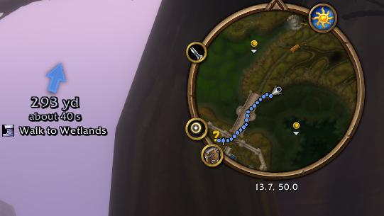
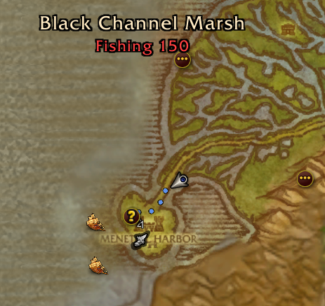

An arrow on screen with the distance and the time to the next step, and the path drawn on the minimap and the world map.
Questify plans the trip on foot around walls and cliffs, and adds flights, boats and your hearthstone when they are faster. No other addon needed.

